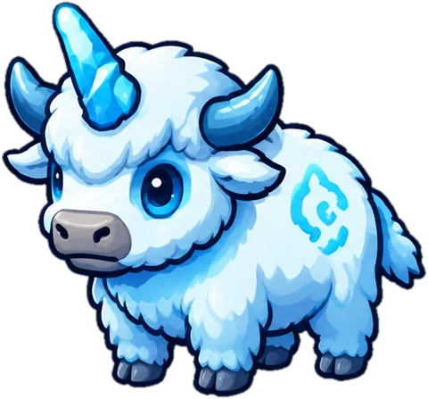

 Psychic
PsychicTap a stage to read its story.
Frostyx is a roly-poly pale blue calf with a single short spiraling horn, enormous round eyes, and small solid hooves that clop pleasantly on the stones of Frozen Peaks. It is built compact and sturdy, and always seems mildly puzzled by the world, tilting its wide head at leaves, sounds, and passing creatures with equal fascination. Its small horn pulses with faint psychic warmth when it is happy, which is most of the time. The snowfield's eldest trees seem to lean slightly toward it when it passes, as though they recognize something ancient in its quiet gaze.
Field note: Frostyx always faces the same direction when it sleeps - toward the oldest tree in whatever snowfield it calls home that night.
Light Grove. Frostyx and its family are found in the Light Grove. See everyone who lives there.
Share a Bond Food that matches its types to become friends. Frostyx loves:
A Bond Food is not a trick. It joins your spirit with the Kimuro's spirit, and only when it chooses you.
Print the Kimuro adventure packs: mazes, cards, a board game and Bond Mark medals.
See the printable packs